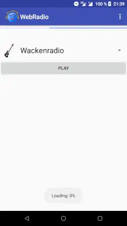
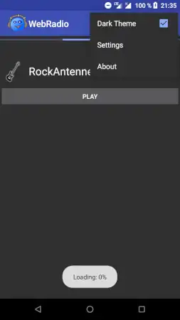

WebRadio
صوت وفيديو وموسيقى
With this app you can play different radio channels from web. There are some pre configured channels, but you can also add custom channels. To add channels you need the stream-url of the channel.
✓ ترخيص مفتوح (GPL-3.0-only) · آخر تحديث: 2022-07-31
1.5الإصدار
1018 KBالحجم
GPL-3.0-onlyالرخصة
Open in Kanzتحميل APK (1018 KB)
Download APK
SHA-256: fec45426088e22c842fb032401732ab235e4199a6c2eea41420d8fb9e0127ba8


امسح الكود لفتح صفحة التطبيق
Scan to open this app page
لو كنز مش متثبت عندك: نزّل متجر كنز.
Not installed? Get the Kanz store.